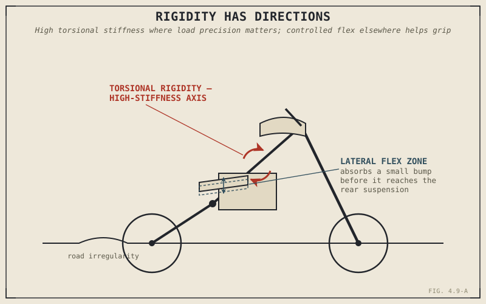

Some race teams have gone as far as deliberately removing bracing from a chassis mid-development, making the frame measurably less rigid on purpose, because the bike gripped better and handled more predictably afterward. That sounds backwards after Chapter 4.1 described the chassis's structural job as holding everything together and transmitting load without failing — but notice the word that chapter actually used: unpredictably. A frame that flexes in a controlled, engineered way isn't failing at its job. In some very specific respects, it's doing that job better than a perfectly rigid one would.
Chapter 4.2 covered frame materials and their stiffness-versus-forgiveness trade-off in terms of surviving load. This chapter returns to structural rigidity from a different angle entirely: not whether a frame survives, but whether more stiffness is even the right goal in the first place.
Rigidity Isn't One Number — It Has Directions
A chassis doesn't have a single stiffness value; engineers think about it along several distinct axes. Torsional rigidity — resistance to twisting, as when the front and rear wheels are pulled slightly out of alignment with each other under hard cornering loads — genuinely needs to be high for precise, predictable steering feedback, especially at the cornering loads Chapter 4.7 described a motorcycle experiencing at real lean angles. But rigidity in other directions, particularly the frame's ability to flex slightly along its length or laterally, is a separate question with a genuinely different answer.
A small, controlled amount of flex in those other directions lets the chassis itself absorb minor road irregularities before they ever reach the suspension, helping the tyre's contact patch stay in better contact with an imperfect road surface than a completely rigid structure would allow. This is conceptually similar to a pattern this book has already shown up more than once — rubber engine mounts absorbing vibration in Chapter 2.17, a slipping clutch plate absorbing mismatched rotational speed in Chapter 3.2 — controlled compliance doing useful work rather than being pure weakness.
A perfectly rigid chassis in every direction sounds like the obvious engineering goal. In practice, some directions genuinely benefit from controlled, deliberate flex — the real skill isn't maximizing stiffness everywhere, it's choosing exactly where rigidity matters and where a little give actually helps.

A motorcycle chassis shown with torsional rigidity highlighted as a critical, high-stiffness axis, alongside a lateral flex zone shown absorbing a small road irregularity before it reaches the suspension.
Too Much Flex Is a Real Problem Too
This isn't licence to treat flex as unconditionally good, and it's worth being just as clear about the other side. Excessive or poorly controlled flex, especially torsionally, produces vague steering feedback and unpredictable handling exactly when a rider needs predictability most — under hard braking or aggressive cornering loads — and can contribute to genuine handling instability, a topic Part VIII will cover directly when it takes up weave and wobble in full. There's a real floor beneath which rigidity cannot drop without costing control, just as there's a ceiling above which additional stiffness stops helping and starts working against grip and rider feedback.
A Common Misconception, Cleared Up Early
It's a natural assumption that a stiffer frame is simply a more advanced, better-engineered frame, and marketing language around chassis rigidity often reinforces exactly that impression. The actual state of the art in chassis engineering isn't maximum stiffness everywhere — it's precisely tuned stiffness, high along the axes where predictability under load genuinely matters, and deliberately allowed to give a little along axes where that flex quietly helps the tyre track an imperfect road. Race teams testing a frame with bracing removed and finding it grips better afterward isn't a fluke or a failure of the original design goal; it's evidence that "stiffer" and "better" were never quite the same question.
Where This Leads
This chapter closes the chassis-as-structure discussion that began with Chapter 4.2. Part IV as a whole has now covered how a chassis is built, how its geometry shapes steering and stability, how far it can lean, and how stiff or flexible it should be. Chapter 4.10 closes this part the way Chapter 2.21 and Chapter 3.7 closed the two parts before it — tying the chassis back to the rest of the motorcycle before Part V opens with the suspension this chapter has already previewed more than once.
Key Concepts to Remember
- Chassis rigidity isn't a single value — torsional stiffness matters most for predictable steering under load, while other directions of flex can genuinely help maintain tyre contact on imperfect surfaces.
- Controlled flex absorbing minor road irregularities is conceptually similar to rubber engine mounts absorbing vibration or a slipping clutch absorbing mismatched speed — compliance doing useful work rather than representing pure weakness.
- Excessive or uncontrolled flex, particularly torsional, produces vague feedback, unpredictable handling under load, and can contribute to genuine instability.
- Modern chassis engineering targets precisely tuned stiffness rather than maximum rigidity everywhere — "stiffer" and "better engineered" are not the same claim.
Cross-References
| ← Ch. 4.1 | Named unpredictable failure, not flex itself, as the chassis's real structural enemy; this chapter shows why some controlled flex is compatible with that structural job. |
| ← Ch. 4.2 | Covered material stiffness trade-offs in terms of survival; this chapter covers stiffness as a tuning question independent of survival. |
| ← Ch. 2.17 / 3.2 | Both showed controlled compliance doing useful work elsewhere on the motorcycle; this chapter applies the identical pattern to chassis flex. |
| ← Ch. 4.7 | Established the cornering loads that make torsional rigidity specifically important. |
| → Ch. 4.10 | Closes Part IV, tying the chassis back to the rest of the motorcycle before Part V opens with suspension. |